Morning Sign Out (MSO) is a UC wide club created to provide anyone interested in science, or pursuing a medical-related career, with resources to help them get the most out of their college experience.
MSO also strives to bridge the gap between the science community and that of the general public. One way we try to accomplish this is by writing articles to simplify hard to understand science, so someone without a strong science background can really comprehend current, relevant science topics.
Specifically at the UCSC branch we write one article per quarter, then all members get together to explain their articles to their peers, encouraging open group discussion.

 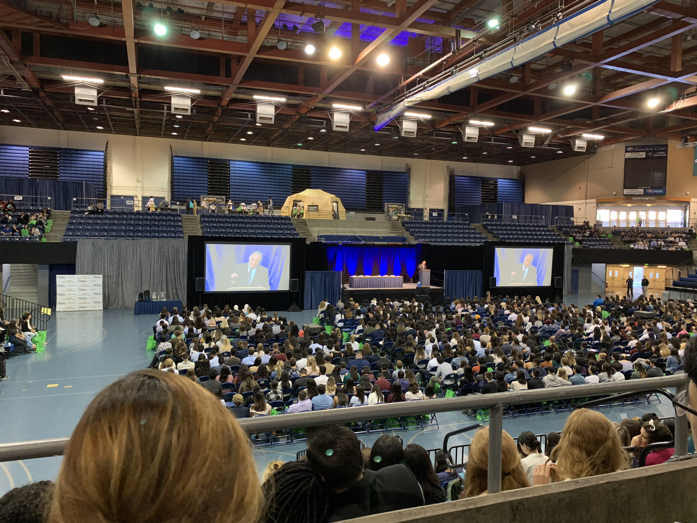
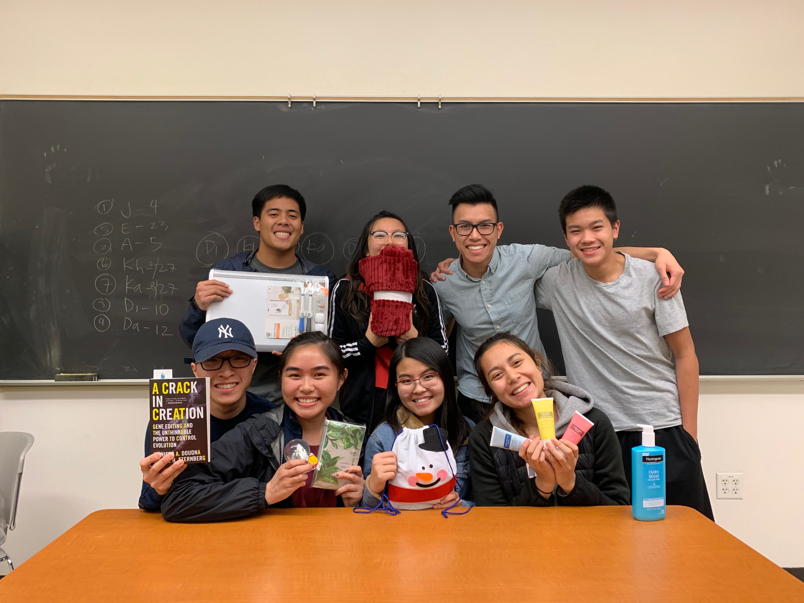
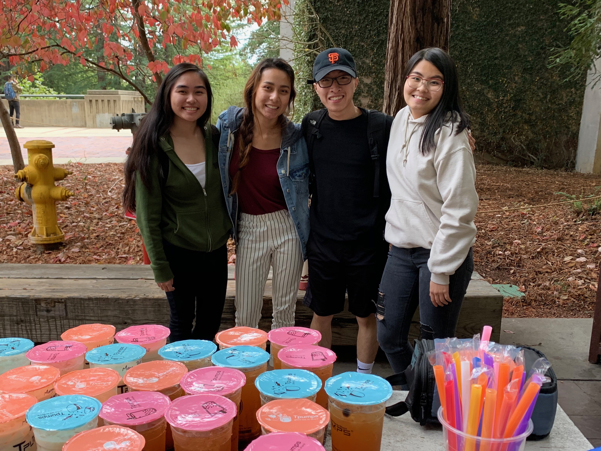
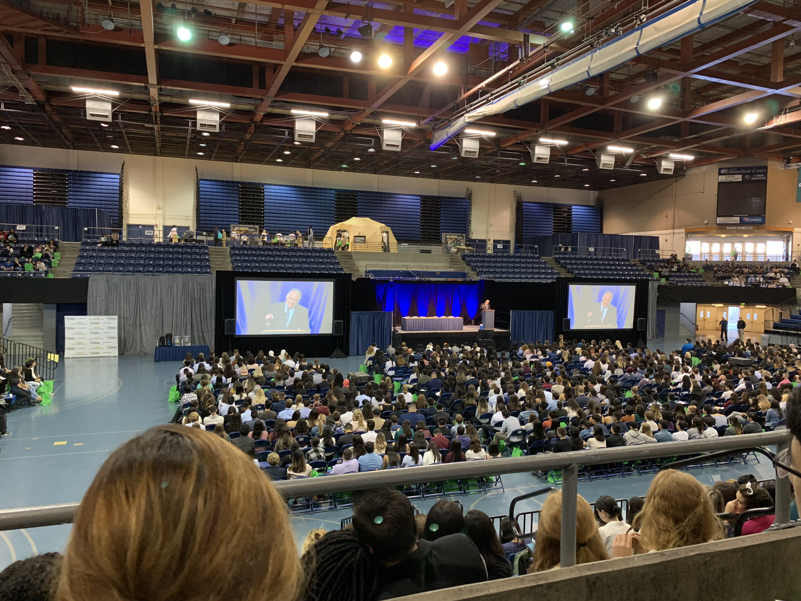
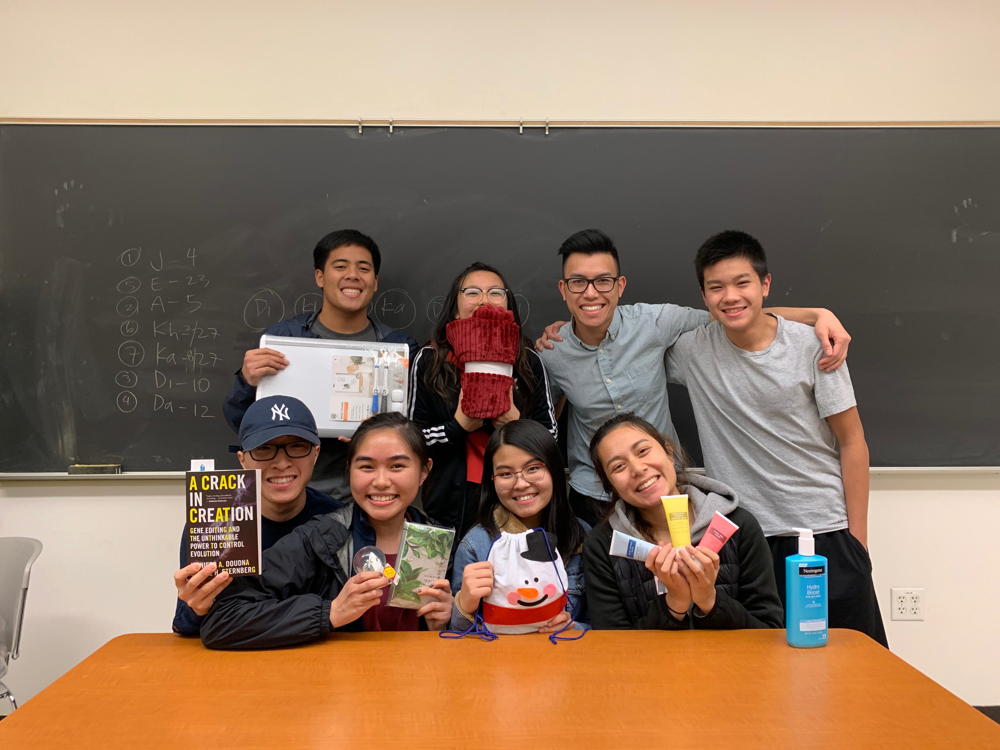
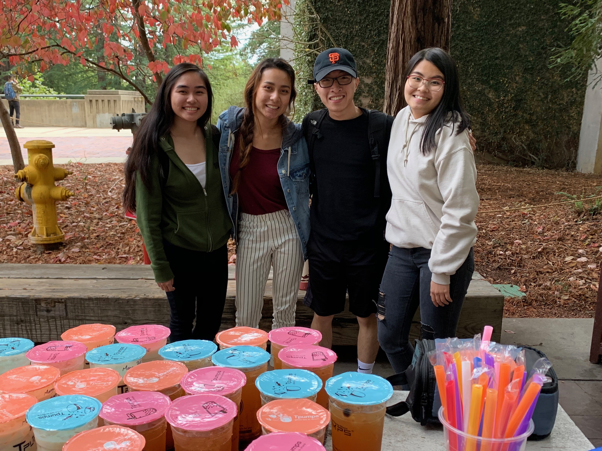

 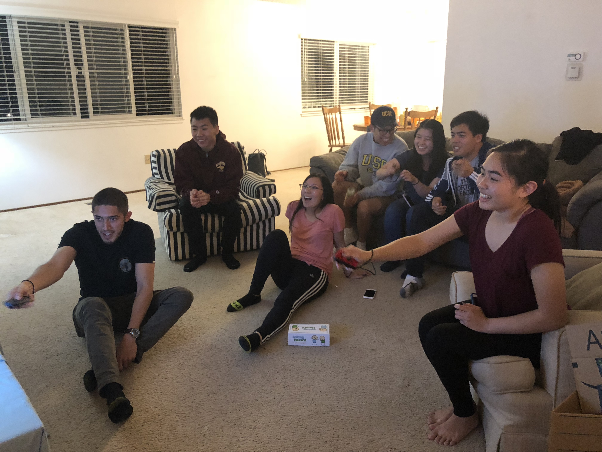
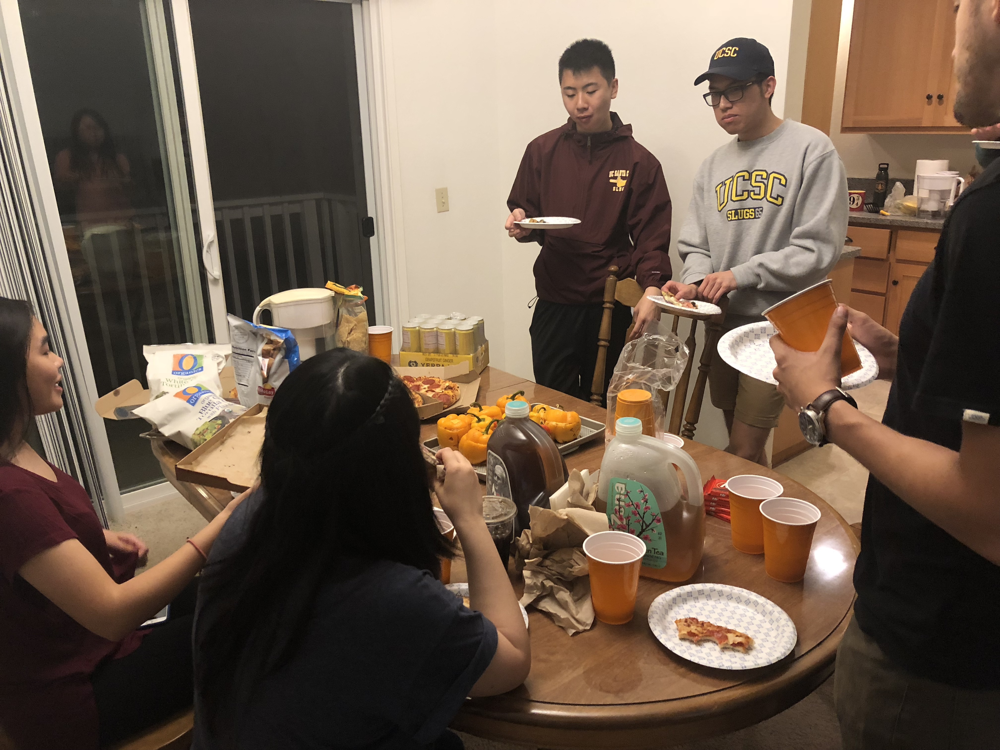
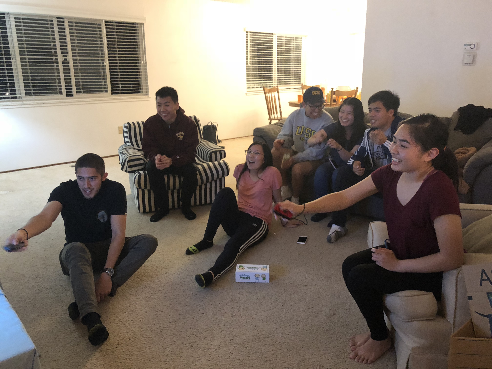
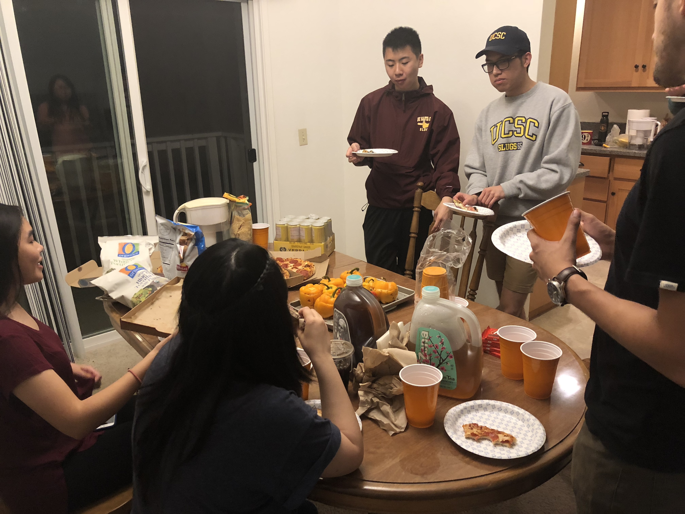

 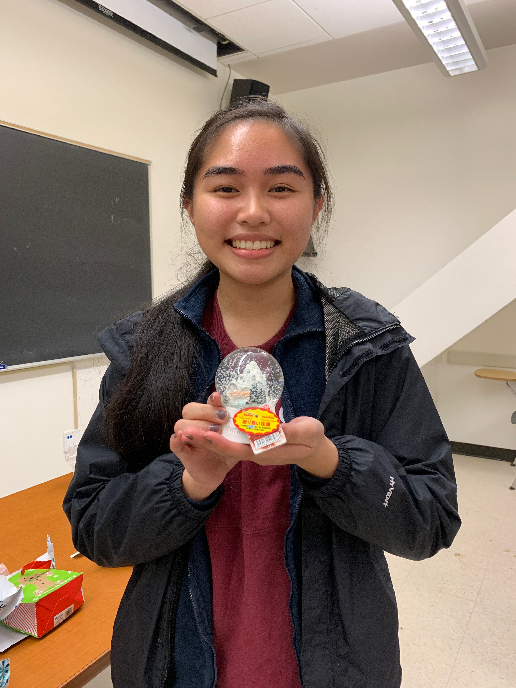
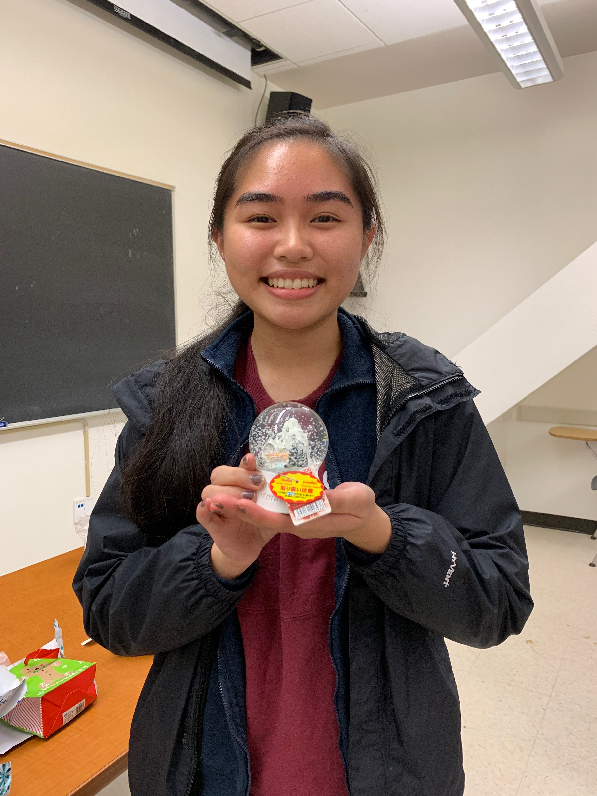